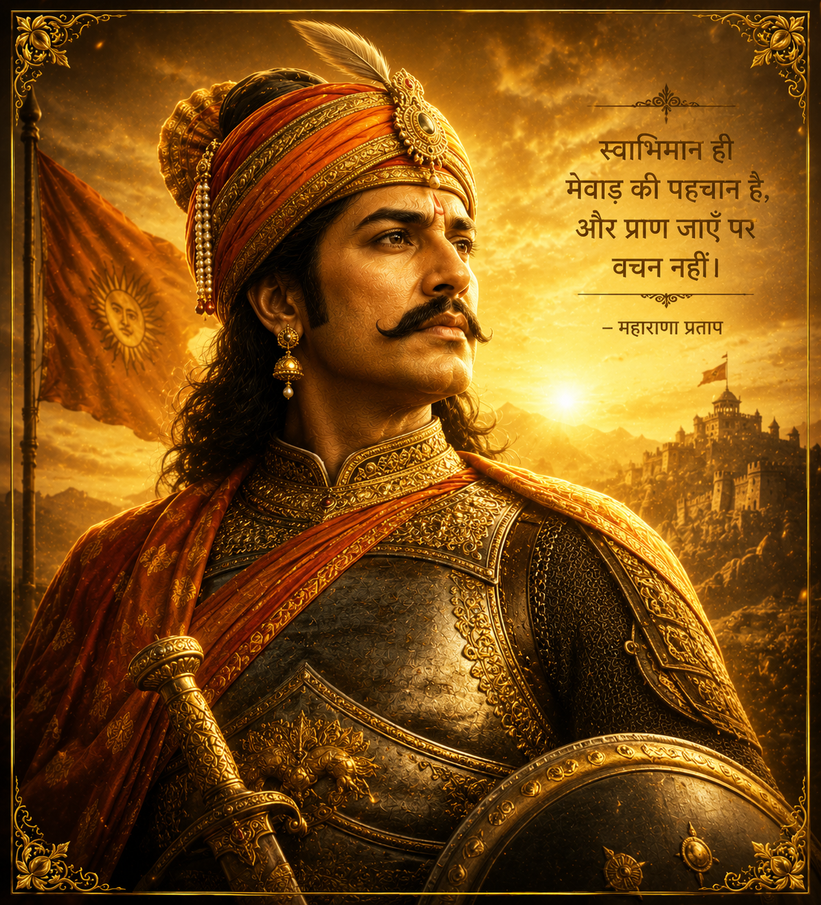

Battle of Haldighati Explorer
In the turmeric-coloured pass of Haldighati, at the heart of the Aravalli hills, Maharana Pratap of Mewar met the vast Mughal army of Akbar, commanded by Man Singh I. One man refused to bow — and a single day of combat became an eternal symbol of Rajput valour.
The Rana Who Would Not Kneel
When Akbar's forces stormed Chittorgarh in 1568, Mewar's ruler Udai Singh II withdrew to the hills, carrying the flame of Rajput resistance with him. On his death in 1572, his son Pratap Singh ascended the throne of Mewar — and inherited a kingdom under siege.
Akbar, eager to complete his dominion over Rajasthan, sent one envoy after another — Man Singh, Bhagwant Das, Jalal Khan — offering terms of submission. Unlike the other Rajput princes who had accepted Mughal service and marital alliance, Maharana Pratap refused to surrender his sovereignty. By 1576, Akbar's patience was spent. A great army, commanded by Man Singh I of Amber, marched through the passes of the Aravallis to crush the defiant Rana.
🏛️ At a Glance
- 18 June 1576 — Fought in the Haldighati pass of the Aravalli hills, near Udaipur, Rajasthan.
- Mughal Tactical Victory — But Maharana Pratap escaped and Mewar was never conquered.
- Maharana Pratap — Led the Mewar forces with allies like Hakim Khan Sur and Bhamashah.
- Legend of Chetak — The loyal steed that carried the wounded Rana to safety.
The Men (and the Horse) Behind the Legend
Two commanders, a band of loyal allies, and one legendary steed defined the day at Haldighati.
Maharana Pratap Singh
- Role — Ruler of Mewar, commander of the Rajput forces
- Command — Rajput cavalry, war elephants, and Bhil archers from the hills
- Resolve — Refused Mughal suzerainty and fought to the last, escaping to continue the war
Man Singh I of Amber
- Role — Mughal commander leading Akbar's expedition against Mewar
- Command — A large imperial army with cavalry, musketeers, and reserves
- Outcome — Won the field but failed to capture the Rana or subdue Mewar
Chetak & the Loyal Allies
- Chetak — Pratap's steed, mortally wounded at the pass, carried him to safety
- Hakim Khan Sur — Pathan cavalry commander who fought for Mewar
- Bhamashah — Treasurer who financed the war; Jhala Maan died saving the Rana
Why it mattered: Man Singh's victory on the battlefield could not break the Rana's will. Every commander and warrior who stood at Haldighati — on either side — entered the epic poetry of Rajasthan.
Fury in the Narrow Pass
Haldighati was a steep, narrow defile in the Aravalli hills — ground that favoured a charging defender over a manoeuvring army. Maharana Pratap hurled his cavalry, war elephants, and Bhil archers at the Mughal vanguard in a thunderous opening assault, shattering the first ranks and sending shockwaves through the imperial line.
But Man Singh held his imperial reserve in check. As the Rajput momentum faltered, fresh Mughal cavalry under Asaf Khan struck the Mewar flank and rear. Outnumbered and cut off, the Rana's forces were pushed back through the pass — and only the diversion of Jhala Maan, who wore the Rana's royal insignia and fell fighting, allowed Maharana Pratap to break away on the wounded Chetak.
🛡️ Strategy at a Glance
- Terrain Offence — The narrow pass channelled the furious first charge of the Rajputs.
- Combined Arms — Cavalry, war elephants, and Bhil archers fought as one force.
- Imperial Reserves — Man Singh's withheld cavalry and flanking attack turned the tide.
- The Diversion — Jhala Maan's sacrifice in the Rana's place secured the escape.
⚔️ The Verdict of Haldighati
- Mughal Tactical Victory — The imperial army held the field at the end of the day.
- Rana's Escape — Maharana Pratap survived to carry on the fight for Mewar.
- Chetak's Sacrifice — The loyal steed fell after carrying his wounded master to safety.
- Mewar Unconquered — The Mughals never secured a lasting hold on the Rana's hills.
A Defeat That Read Like a Victory
On paper, Haldighati was a Mughal victory: the Rana's army was scattered and the imperial banner flew over the pass. Yet in every sense that mattered to Mewar, the battle was a triumph of will. Maharana Pratap was alive, his kingdom unconquered, and his defiance now the stuff of legend.
Akbar's generals marched into a land that would not stay conquered. From the hill refuges of the Aravallis, the Rana rebuilt his forces and turned the war into one of swift raids and mountain guerrilla warfare — a strategy that would slowly reclaim most of Mewar.
The Turmeric Pass Remembered
The name Haldighati comes from the yellow, turmeric-tinted soil of the pass — a fitting emblem for a day that stained the Aravallis in memory.
An Immortal Stand
Haldighati entered the ballads of Rajasthan as the supreme test of Rajput honour — a stand where loyalty to one's oath outweighed the arithmetic of armies.
The Rana's Guerrilla War
After Haldighati, Pratap waged a relentless guerrilla campaign from the hills, striking at Mughal outposts until he had reclaimed most of Mewar before his death in 1597.
The Pass Honoured
At Haldighati stands a memorial to Chetak, and on the shore of Udaipur's Fateh Sagar lake, a statue of Maharana Pratap gazes across the land he refused to surrender.
Chronology of the Battle of Haldighati
From the fall of Chittor to the death of the Rana — the road to and from the pass of Haldighati.
The Fall of Chittorgarh
Akbar's forces storm the Sisodia capital. Udai Singh II withdraws into the hills, keeping the embers of Mewar resistance alive.
Pratap Ascends the Throne
On Udai Singh's death, his son Pratap Singh becomes the Rana of Mewar and vows to defend the kingdom's independence.
Akbar's Overtures Refused
Emissaries including Man Singh and Bhagwant Das press the Rana to submit. Pratap spurns every offer of alliance and submission.
The Battle of Haldighati
Man Singh's imperial army meets the Rajput forces in the narrow pass. The furious charge breaks on Mughal reserves.
The Rana's Escape
Wounded and cut off, Maharana Pratap escapes on the mortally wounded Chetak, who dies carrying his master to safety.
Guerrilla War & Recovery
From the hills the Rana wages an unrelenting campaign of raids and mountain warfare, reclaiming most of Mewar before his death on 19 January 1597.
The Rana and His Realm
A glimpse of the defiant Rana, the mountain pass he defended, and the powers arrayed against him.



📚 References & Further Reading
- Tod, James (1829). Annals and Antiquities of Rajasthan. Oxford University Press.
- Majumdar, R. C. (ed.) (1974). The Mughal Empire. Bharatiya Vidya Bhavan.
- Chandra, Satish (2007). Medieval India: From Sultanat to the Mughals. Har-Anand Publications.
- Sarkar, Jadunath (1984). A History of Jaipur. Orient Longman.
- Sharma, G. N. (1954). Mewar and the Mughal Emperors. Shiva Lal Agarwala & Co.
- National Council of Educational Research and Training (NCERT). Our Pasts — II (Class VII History).
- Hero photograph. Haldighati Pass — Wikimedia Commons, CC BY-SA 4.0.